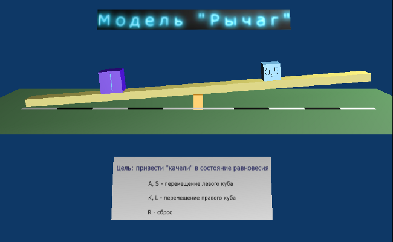

Blender – это программа для созданий трёхмерной компьютерной графики. С помощью Blender можно создавать графические модели, анимацию, модели реального времени и др.
Изначально программа была коммерческим проектом, но затем ее владельцы пришли к решению открыть исходный код, несмотря на очень хорошие результаты продаж. Blender обладает универсальными возможностями моделирования. Вывод об универсальности можно сделать потому, что Blender сопоставим по своим возможностям с коммерческими программами для трехмерного моделирования, но при этом остается самой доступной программой.
Программа Blender была создана Тоном Розендолом при компании «Free Blender» в 2002 году.
Особенность Blender в том, что это, скорее всего, единственная программа, с помощью которой можно создавать модели реального времени и очень легко моделировать некоторые физические законы. Эта возможность в основном используется для создания компьютерных игр, но не только для этого. Также ее можно попробовать использовать для создания «виртуальных лабораторий». Виртуальная лаборатория – это место, где позволяется моделировать поведение объектов реального мира в компьютерной среде. И эти модели будут работать в реальном времени. То есть они могут взаимодействовать с пользователем. Такие модели создаются с помощью движка Game Engine, который встроен в Blender.
Главное назначение этого движка – это быстрое создание компьютерных игр. Game Engine – это движок, объединяющий движение в реальном времени с физикой и логическими блоками. Логические блоки состоят из контроллеров, активаторов и сенсоров.
Сенсоры ассоциируются с органами чувств живых организмов; они реагируют на нажатие кнопок, на столкновения, на контакты с материалами (прикосновение), на разовые события или значения свойств.
Контроллеры воспринимают события сенсоров и направляют их значения. Например, если выбрана пункт «AND» то все время наблюдается передача. Если выбран «OR» контроллер, то вы также можете использовать скрипты на языке программирования Python.
Активаторы выполняют действия над объектами. Например, активатор движения можно представить себе как мышцу. Эта мышца может применять силу к объекту для его передвижения или переворота. Есть также активаторы для проигрывания определённой анимации.
В итоге можно сказать, что Blender это достаточно хорошая программа, с помощью которой можно делать многое, в том числе и моделировать реальный мир.
Моделирование – это процесс создания объектов–моделей с целью заместить объект-оригинал при изучении и исследовании. В модели «превозносятся» значимые для данного исследования (опыта) черты (свойства) оригинала, а незначительные для данного исследования можно опустить. Модели применяются при изучении сложных явлений, процессов, конструирования новых сооружений.
В силу многозначности понятия «модель» в науке и технике не существует единой классификации видов моделирования. Классификацию можно проводить по характеру моделей, по характеру моделируемых объектов, по сферам приложения моделирование (в технике, физических науках, кибернетике и т.д.). Существует множество видов моделирования. Более распространенные:
Чаще всего используется смешанное моделирование. Например, имитационные модели могут быть реализованы с помощью компьютера.
С помощью графического компьютерного моделирования можно создать виртуальную реальность. Она может быть фантастической (не соответствующей действительности), а может моделировать вполне реальные ситуации. В реальности всегда действуют физические законы. Все люди с детства привыкли видеть, как движутся и взаимодействуют объекты. Например: человек не станет бить по кирпичу, потому что он большой массы, а мяч вполне можно ударить, так как он надут воздухом и имеет маленький вес. Все, что было перечислено – это физика движения, или по-другому «ньютоновская» физика. Чаще всего при моделировании она нас и интересует.
Хорошо бы иметь программу, с помощью которой можно было бы моделировать физику движения. Такой программой может служить игровой движок в Blender [Приложение 1].
Логическая панель состоит из 4 блоков. Первый блок отвечает за свойства объекта: масса, радиус объекта, форма взаимодействия объекта и др. Следующие 3 блока логически связаны, так как они являются сенсором, контроллером и активатором. Эти блоки позволяют настроить взаимодействия объектом с пользователем, скриптом, таймером.
Используя этот движок можно виртуально заставить объект падать под силой тяжести, висеть в невесомости, удариться о стену. Можно смоделировать эффект трения, эластичности (упругости) объекта. То есть можно смоделировать реальный мир и взаимодействие объектов в нем. Конечно в основном Game Engine используют для быстрого создания компьютерных игр. Однако мы решили использовать его для создания физических моделей, которые могут служить как хорошая демонстрация тех или иных законов физики, их изучения, исследования. Если создать более сложную модель, то, исследуя ее, можно узнать как поведет себя объект в реальном мире. Поскольку в Game Engine можно создавать модели реального времени, то можно создать модель, взаимодействующую с пользователем.
Нами были сделаны интерактивные модели.
Нами была разработана модель, иллюстрирующая влияние приложенной силы на объект. В этой модели имеется 4 шара разной массы. При нажатии на клавишу 1 ко всем шарам прикладывается сила в 1 «виртуальный ньютон», при нажатии на клавишу 2 – 2 ньютона и т. д. до 4 ньютонов.
Сначала на сцену были добавлены плоскости и шары. После чего с помощью Game Engine была смоделирована масса. Были настроены контроллеры, сенсоры и активаторы. Например, все шары двигаются при нажатии клавиш [Приложение 2].
Эта модель демонстрирует как взаимодействуют между собой объекты, обладающие эластичностью и не обладающие ей.
На сцену были помещены четыре шара. При нажатии на клавишу Пробел они сталкиваются парами. В первой паре сталкиваются два шара, не обладающие эластичностью (например, ядра), во второй паре — оба шара эластичны (например, мячи).
В Blender настройка эластичности осуществляется на панели Материалов (движок Restitut) [Приложение 3].
Модель рычага является более интересной, чем первые две. Она моделирует известную физическую закономерность: рычаг уравновешен, когда произведение массы на длину одного плеча равно произведению массы на длину другого плеча.
В этой модели пользователь может передвигать виртуальные массы на бревне, добиваясь равновесия [Приложение 4].

Поскольку сила векторная величина, то у неё всегда есть точка приложения. В данной модели показано как движение объекта зависит от точки приложения силы. На плоскости находятся два цилиндра. У одного цилиндра точка приложения силы находится вверху, а у другого - внизу. Поэтому когда действует сила, то первый цилиндр начинает падать и переворачиваться, а второй ровно ехать [Приложение 5].
С помощью gBlеnder можно создавать и более сложные модели, которые позволять моделировать какую-нибудь более реальную ситуацию и наблюдать как поведут себя объекты. Например, можно создать строение и посмотреть какая сила и куда направленная может его разрушить [Приложение 6]. Или оценить, как будут взаимодействовать объекты в невесомости и под силой тяжести. Поэтому gBlender может использоваться для изучения физики движения, создания демонстрационных моделей и виртуальных лабораторий (т.к. возможна интерактивность), создания сложных моделей для исследования поведения реальных объектов в различных условиях (т.к. возможно усложнение моделей с помощью скриптов).